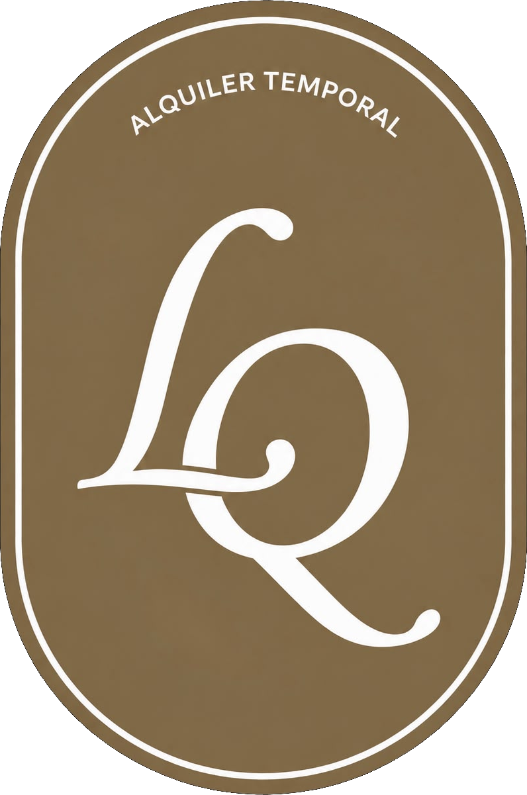

Un espacio para encontrarse
LA QUINTA
Un día para disfrutar, reunirse y celebrar
La Quinta está pensada como un espacio de uso diario para encuentros, reuniones y celebraciones. El protagonista es el entorno: parque, pileta climatizada, quincho y sectores para chicos.
EL ESPACIO
Todo preparado para pasar el día
🏊 Pileta climatizadaUno de los espacios centrales de La Quinta.
🔥 QuinchoSector cubierto para reunirse y compartir.
🌳 Amplio parqueMucho verde y distintos rincones para disfrutar.
🛝 JuegosSector infantil con juegos y casita.
🌺 NaturalezaFlores, frutales y espacios de descanso.
🎉 ReunionesIdeal para encuentros familiares y sociales.
📅 Reserva por díaSe elige una fecha puntual, no una estadía.
💬 Consulta directaLa confirmación se coordina por WhatsApp.
🚙 Estacionamiento privadoAmplio espacio dentro del predio para estacionar muchos autos.
⚽ Cancha de fútbolCanchita chica para disfrutar con amigos y familia.
Amantes de la naturaleza
Cuidemos juntos nuestros árboles, plantas y espacios verdes. Disfrutá de La Quinta y ayudanos a mantenerla siempre hermosa.
RECORRIDO
Conocé La Quinta en video
Material real del espacio para mostrar cómo se vive el lugar más allá de una foto.
UBICACIÓN
Villa Esquiú · Córdoba
Podés abrir la ubicación oficial en Google Maps para ver exactamente dónde se encuentra el espacio.
¿Qué día querés reservar?
Elegí una fecha disponible y mandanos la consulta por WhatsApp.